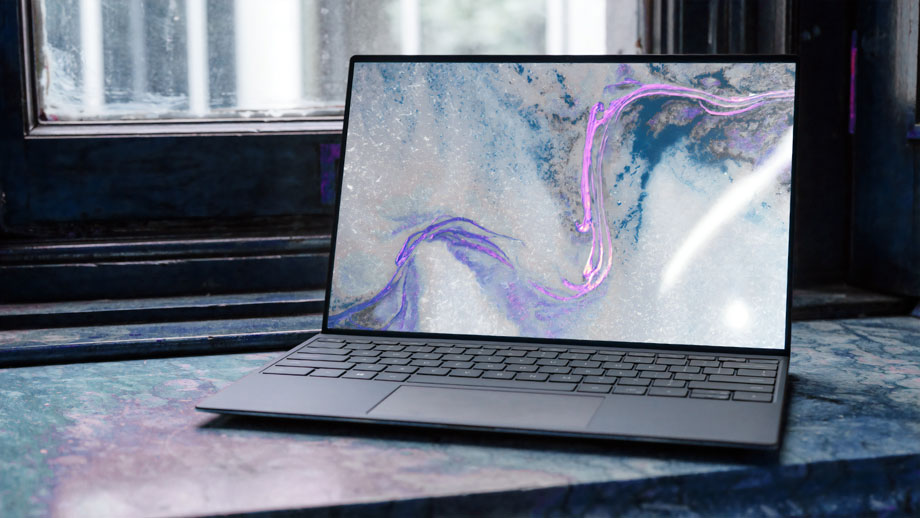

"I just knew it! Well, I wasn't gonna let you get all the credit and
take all the reward. Hey, I knew there was more to you than money. Oh,
no! Oh, my! Artoo! Can you hear me?""
Toujours plus de drône dans le ciel
Publié le 10 février 2025
par James Webb
Your friend is quite a mercenary. I wonder if he really cares about
anything...or anyone. I care! So...what do you think of her, Han? I'm
trying not to, kid! Good... Still, she's got a lot of spirit. I don't
know, what do you think? Do you think a princess and a guy like me...
No!
Le drône est-t'il le nouveau meilleur ami de l'homme?
Internet, c'était mieux avant
Publié le 7 jan vier 2025
par Arthur Poulas
Yes. Our scout ships have reached Dantooine. They found the remains
of a Rebel base, but they estimate that it has been deserted.

Au moins on peut toujours changer son fond d'écran
For some time. They are now conducting an extensive search of
the surrounding systems.